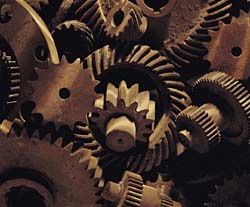

SCP-882 - Машина
Объект №: SCP-882
Класс объекта:
Евклид
Особые условия содержания: SCP-882 следует постоянно содержать в жидкой среде, не менее чем на 40% состоящей из морской воды. Объект должен быть подвешен на неметаллических тросах, ныне используемые хлопковые веревки следует ежедневно заменять новыми. Также объект следует ежедневно проверять на предмет отслаивания ржавчины. Если обнаружится, что какая-либо часть SCP-882 не покрыта ржавчиной, она должна быть немедленно погружена в 100% раствор морской воды. Воду следует брать непосредственно из океана. Концентрацию уменьшить только тогда, когда объект снова покроется ржавчиной.
В зоне содержания не должно быть ничего металлического. Разрешены только органические материалы, но при любом контакте с SCP-882 следует надевать толстые хлопковые перчатки. Любой металлический объект, вступивший в контакт с SCP-882, должен быть подвергнут воздействию высоких температур, расплавлен и погружен в 100% морскую воду отдельно от SCP-882.
О любых нарушениях слуха у персонала следует немедленно сообщить, а пострадавшие сотрудники должны пройти полное психологическое обследование, и, в зависимости от результатов, должны быть переведены в другой комплекс или заключены в [УДАЛЕНО].
Описание: SCP-882 выглядит как беспорядочное нагромождение шестеренок, тросов, шкивов, винтов и ремней, сделанных из сплава различных металлов. Размеры объекта во время извлечения приближались к восьмидесяти семи кубическим метрам. Размеры на данный момент - приблизительно двенадцать кубических метров. SCP-882 быстро ржавеет в морской воде. Не было обнаружено никаких опознаваемых источников энергии, но все детали приходят в движение, когда не покрыты ржавчиной. SCP-882 абсолютно беззвучен, вне зависимости от уровня активности.
Любой металлический предмет, коснувшийся SCP-882, намертво прикрепляется к нему, и через несколько дней становится новой частью объекта. На органическую материю это не распространяется. SCP-882 - очень упругий, прочный на разрыв, ударная вязкость выше, чем у титанового сплава, использующегося в авиастроении, несмотря на то, что материал представляет собой произвольный сплав железа, олова, золота и нескольких других металлов, некоторые из которых до сих пор не идентифицированы. Сильное, направленное накаливание в течение нескольких часов отделяет только маленькую часть от основного массива.
У людей, пребывающих в непосредственной близости от объекта в течение длительного периода времени, развиваются слуховые галлюцинации, чаще всего они слышат скрежет и треск вблизи объекта. Звуки усиливаются, и ослабевают только если бросить в объект что-нибудь металлическое. Люди на поздних стадиях психоза бросались в объект сами и почти мгновенно умирали, будучи раздавленными. Тело чаще всего затягивает в объект, и его невозможно достать.
SCP-882 был найден в районе северо-восточного берега острова Банкс. На участке радиусом в одну милю не было металлов и металлической руды. SCP-882 находился в центре этого участка. На момент открытия SCP-882 был погружен в морскую воду. Неподалеку находился маленький городок, оставленный жителями несколько лет назад. SCP-882 был изъят, и вскоре с него начала осыпаться ржавчина. Это привело к тому, что некоторые части начали двигаться. После нескольких несчастных случаев SCP-882 был уменьшен и перевезен в нынешнюю зону содержания.
Замечания: SCP-882 не должен находиться вблизи или любого субъекта, который может быть заражен .
SCP-882
SCP-217
SCP-217